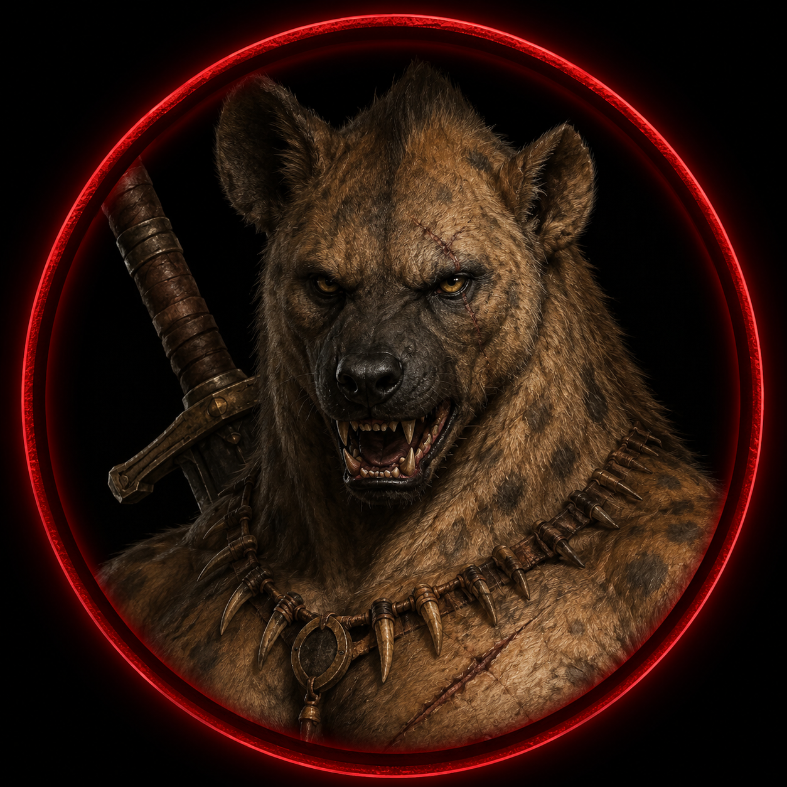

━━━ THE LAST DAWN ━━━
🔱 REGISTRO OFICIAL — SESSÃO XV
🧮 XP DE OFÍCIO — O QUE CADA UM FEZ
⚕️ Elion — Médico / Clérigo
• Estudou Anatomia das Serpentes do Deserto (+40 XP)
• Estudou Arte da Orientação Estelar (+20 XP)
• Conectou a Árvore Impossível aos registros da Quinta Tempestade
• Compartilhou praticamente todas as descobertas com Barn e com o grupo
→ +60 XP | 550 → 610 XP (610/650)
🏹 Caçador — Rastreador
• Foi o primeiro a despertar
• Identificou imediatamente a ausência completa de rastros na praia
• Estudou As Cem Formas da Resistência (+40 XP)
• Estudou os registros de Solânia (+10 XP)
→ +50 XP | 360 → 410 XP
🌿 Evangeline — Herbalista / Alquimista
• Estudou A Quinta Tempestade
• Compartilhou conhecimentos com o grupo
→ +10 XP | 370 → 380 XP
🐊 Crocotop — Pescador
• Estudou Manual das Grandes Caravanas (+20 XP)
→ +20 XP | 180 → 200 XP
🍳 Eren — Cozinheiro
• Estudou Especiarias dos Cem Oásis (+40 XP)
• Estudou Código dos Mercadores Livres (+20 XP)
• Estudou O Milênio Sob as Dunas (+10 XP)
• Analisou profundamente o Diário de Thar-Zul
→ +70 XP | 90 → 160 XP
⚔️ Dravon — Mercenário
• Estudou Criação de Montarias (+20 XP)
• Estudou Sobrevivência Entre as Areias (+20 XP)
• Estudou O Coração Enterrado (+10 XP)
• Identificou antigas Runas Ifritianas presentes no Diário de Thar-Zul
→ +50 XP | 20 → 70 XP
🔨 Kael — Ferreiro / Técnico de Forja-Viva
• Não participou das pesquisas
→ +0 XP | 40 → 40 XP
📊 N.E.A. — EXPOSIÇÃO ARCANA
O contato com a Árvore Impossível, somado ao estudo de tomos proibidos, aumentou significativamente a Exposição Arcana dos personagens.
🛡️ HONRA — AÇÕES DA SESSÃO
☠️ CORRUPÇÃO
Nenhuma alteração.
O grupo não realizou ações que aumentassem nem reduzissem Corrupção.
📚 DESCOBERTAS IMPORTANTES
- Greyfield desapareceu completamente
- Apenas algumas horas se passaram para o grupo
- Seis meses transcorreram no restante do continente
- A Árvore Impossível continua existindo em Zaharam
- A árvore não possui mana
- A árvore não possui essência vital
- A árvore manifesta o fenômeno conhecido como Silêncio Arcano
- O rádio de Greyfield sobreviveu ao colapso da estação
- Fenômenos semelhantes começaram a surgir por todo o continente
- Novas Rupturas apareceram em diversos reinos
- Algumas Rupturas trouxeram fortalezas desconhecidas
- Outras trouxeram cidades inteiras
- Outras revelaram bibliotecas impossíveis
- O antigo baú da família Clant finalmente se abriu
- Todas as páginas encontradas durante a campanha pertencem ao Grimório Ardente de Thar-Zul Ravengar
- Os capítulos finais do Grimório foram arrancados
- A Profecia parece tratar de algo muito maior que o fim do mundo
- O Diário de Thar-Zul aparenta ser um manuscrito original
- Dravon identificou Runas Ifritianas extremamente antigas presentes no diário
- Tibério está diretamente ligado aos acontecimentos envolvendo Greyfield
- Pessoas de diferentes reinos começaram a compartilhar sonhos com a mesma floresta
- O Conselho dos Sete foi oficialmente convocado
- Os aventureiros tornaram-se as únicas testemunhas vivas da Estação Greyfield
👑 MVPs DA SESSÃO
✦ Toque nos selos para revelar os heróis

• Compartilhou grande parte das descobertas
• Auxiliou na interpretação dos documentos históricos

• Relacionou a Árvore Impossível aos registros proibidos
• Explicou todos os acontecimentos para Barn Clant

• Encontrou a Árvore Impossível
• Percebeu a ausência completa de rastros
• Contribuiu com informações históricas sobre Solânia
• Identificou o fenômeno do Silêncio Arcano
• Liderou a análise dos documentos proibidos
• Organizou e transmitiu todas as informações para Barn Clant
• Tornou compreensível um fenômeno que ultrapassa todo o conhecimento mágico conhecido
🎬 MOMENTOS MARCANTES
- O despertar na praia após Greyfield
- O silêncio absoluto antes da consciência retornar
- A descoberta da Árvore Impossível
- A constatação de que a árvore não possui mana nem vida
- A revelação de que seis meses se passaram no mundo
- O reencontro com Barn Clant
- A revelação das novas Rupturas espalhadas pelo continente
- A abertura do antigo baú da família Clant após séculos
- A descoberta de que todas as páginas pertencem ao mesmo Grimório Ardente
- A leitura dos Tomos Proibidos na Grande Biblioteca Solar
- A confirmação de que o Diário de Thar-Zul parece ser original
- Dravon identificando Runas Ifritianas ancestrais
- A chegada dos relatórios dos demais reinos
- A convocação oficial do Conselho dos Sete
📖 ENCERRAMENTO
Greyfield desapareceu.
Mas seu desaparecimento não encerrou o mistério.
Apenas o espalhou pelo continente.
Enquanto novos reinos relatam rupturas impossíveis...
antigos livros voltam a ser abertos.
antigas profecias voltam a ser lidas.
e antigos nomes voltam a ser pronunciados.
Pela primeira vez...
os aventureiros compreendem que Greyfield nunca foi o verdadeiro inimigo.
Ela era apenas o primeiro aviso.
A Quinta Tempestade começou.